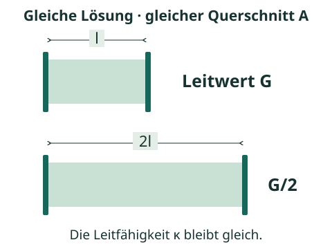

1. Drei Größen auseinanderhalten
| Größe | Bedeutung | Passende Einheit |
|---|---|---|
| Leitwert G | Wie gut der konkret betrachtete Lösungsabschnitt zwischen den Elektroden Strom leitet. Abhängig von Lösung und Messgeometrie. | S, mS oder µS |
| Leitfähigkeit κ | Stoffeigenschaft der Lösung bei angegebener Temperatur und Zusammensetzung; von der Messgeometrie unabhängig. | S/m; häufig mS/cm oder µS/cm |
| Zellkonstante KZelle | Geometrischer Faktor, der Leitwert und Leitfähigkeit verknüpft. Für eine bestimmte Messzelle vorgegeben. | m⁻¹ oder cm⁻¹ |
S steht für Siemens. Der Leitwert ist der Kehrwert des elektrischen Widerstands R: G = 1/R. R wird in Ohm (Ω) angegeben.
2. Warum die Messgeometrie zählt
Im idealisierten Modell zweier paralleler Elektroden mit einheitlichem Feld gilt: Ein längerer Weg durch dieselbe Lösung verringert den Leitwert; ein größerer wirksamer Querschnitt erhöht ihn.

l ist der Elektrodenabstand, A der wirksame Querschnitt. Die einfache Beziehung l/A gilt für das dargestellte Idealmodell. Bei realen Messzellen fasst die angegebene Zellkonstante die wirksame Geometrie zusammen.
Folgerung: Zwei verschiedene Messzellen können für dieselbe Lösung unterschiedliche Leitwerte liefern. Mit der passenden Zellkonstante ergibt sich jeweils dieselbe Leitfähigkeit.
3. Einheiten sicher zuordnen
1 mS/cm = 1 000 µS/cm = 0,1 S/m
1 cm⁻¹ = 100 m⁻¹
Der Zusatz „pro Zentimeter“ oder „pro Meter“ gehört zur Leitfähigkeit. Ein Wert von „450 µS“ ist ein Leitwert; „450 µS/cm“ ist eine Leitfähigkeit.
Kurzes Rechenbeispiel
Gegeben sind G = 0,80 mS und KZelle = 1,25 cm⁻¹.
= 1,0 mS/cm = 0,10 S/m
Die Einheit ergibt sich mit der Rechnung: mS · cm⁻¹ = mS/cm. Würde bei gleicher Zellkonstante der Leitwert steigen, stiege auch die Leitfähigkeit.
Kurz selbst prüfen
Eine zweite Zelle liefert für dieselbe Lösung G = 2,0 mS bei KZelle = 0,50 cm⁻¹. Widerspricht das dem Beispiel? Begründe mit einer Rechnung.
Ergebnis und Begründung
κ = 0,50 cm⁻¹ · 2,0 mS = 1,0 mS/cm. Das ist derselbe Wert wie zuvor. Der unterschiedliche Leitwert entsteht durch die unterschiedliche Messgeometrie, nicht durch eine andere Leitfähigkeit der Lösung.
Kannst du G, κ und KZelle jeweils mit Bedeutung und Einheit benennen?
Fachliche Quellen und Modellgrenzen
- IUPAC Gold Book: Electric conductance und Conductivity – Begriffsabgrenzung.
- IUPAC Gold Book: Cell constant – Zusammenhang KZelle = κ · R und damit κ = KZelle · G.
- IUPAC Gold Book: Siemens – Einheit des Leitwerts.
- NIST: Primary Standards and Standard Reference Materials for Electrolytic Conductivity, Abschnitt 1.1 – Geometriefaktor und Leitfähigkeit.
Eigenständig formuliertes Lernmaterial; Aufgaben und Zahlenbeispiele sind eigens für diese Lernseite entwickelt.